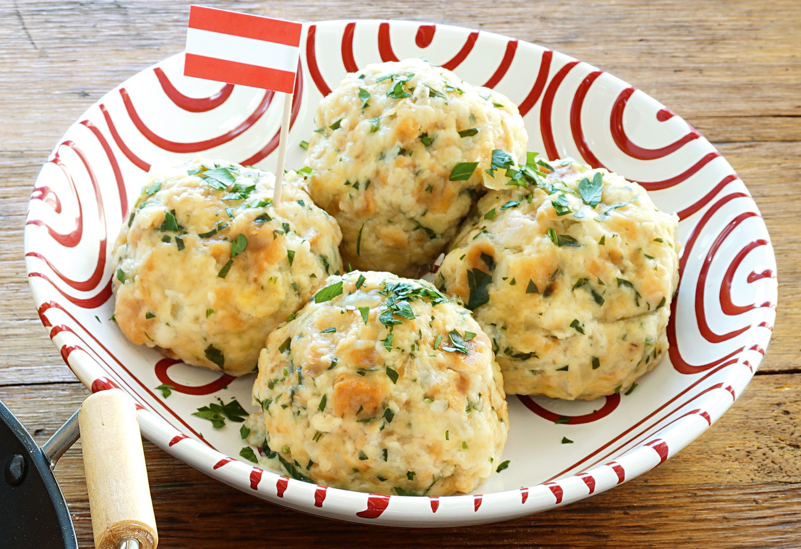

Semmelknödel

Einkaufsliste
- 500g Weißbrot oder Semmelbrösel
- 500ml Milch
- 2 Eier
- 1 Zwiebel
- Butter
- Mehl
- Pfeffer
- Muskatnuss
- Salz
- Petersilie (gehackt)
Step-by-Step
- Für köstliche Semmelknödel zuerst die Semmeln in sehr dünne Scheiben (5-10 mm) oder kleine Würfel schneiden - natürlich kann man auch fertige Semmelwürfel (ca. 300 Gramm) verwenden. Die Milch erwärmen, über die Semmelstücke gießen und für ein paar Minuten ziehen lassen.
- Anschließend Salz, Pfeffer, Muskat, die feingehackte Petersilie und die vorher versprudelten Eier gut mit der eingeweichten Semmelmasse unterkneten – am besten mit feuchten Händen.
- Die Zwiebel schälen, fein reiben oder schneiden und in einer Pfanne mit etwas Butter leicht andünsten (nicht braun werden lassen). Diese ebenfalls unter die Knödelmasse geben und alles gut durchkneten.
- Nun mit feuchten Händen (oder mit Hilfe eines Eisportionierers) beliebig große Knödel formen: Dabei den Teig gut zusammendrücken und Kugeln formen, anschließend in Mehl wenden.
- Die Semmelknödeln in einem großen Topf mit leicht kochendem Salzwasser 15 - 20 min. (je nach Größe) ziehen lassen, bis sie nach oben steigen. Danach die Semmelknödel mit einem Schaumlöffel aus dem Wasser nehmen.
Kleiner Tipp:
Anstelle von Salzwasser kann man die Knödel auch in einer klaren Gemüsesuppe kochen.
Als kleine Miniknödel geformt, bilden sie eine hervorragende Suppeneinlage.